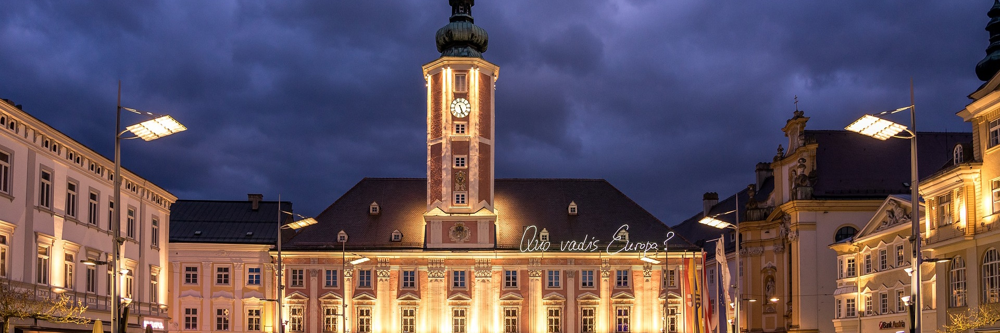

La mairie

Présentation
Les communes ont été créées en Aglitanie à la suite de la Constitution Fédérale de 1678, transformant les 5 royaumes aglitaniens en une république fédérale impliquant l'ensemble des citoyens dans les mesures les plus importantes. Le rôle des communes est donc de rapprocher les Aglitaniens des institutions régionales et fédérales. Elles ont pour principales compétences la santé généraliste, la culture, le sport, l'emploi et plus généralement tout ce qui relève de la vie quotidienne.
Dès 1752, certaines de ces compétences ont été transféres aux districts qui regroupent plusieurs communes. C'est notamment le cas de la gestion du réseau d'eau, de l'urbanisme ou de certaines infrastructures comme les bibliothèques ou les centres de santé.
Le maire est élu tous les 5 ans au suffrage universel direct. Il faut simplement être âgé de 17 ans ou plus et être résident principal de la commune. Le maire actuel est Baltän Halkyrti, élu en 2018. Il restera donc en fonction jusqu'en 2023.
La commune de Triskalya, fondée en 1678, fusionne en 1962 avec 6 autres communes de son aire urbaine proche pour former la commune de Triskalya ha Plafälda, consolidant ainsi son importance au sein du district de Plafälda et de la région de Filtanyë. Les communes absordées deviennent des sections de la nouvelle commune. Cela permet un maillage fin du territoire afin de guider plus facilement les politiques publiques. Voici leur liste et leur population :
| Nom de la section | Nombre d'habitants |
|---|---|
| Triskalya | 15 000 |
| Kelisla | 9 000 |
| Sy-Favlatë | 5 000 |
| Sy-Hatar nës Triskalya | 3 000 |
| Lästalvesk | 1 500 |
| Sy-Kanrësty | 800 |
| Rikiky | 300 |
Le conseil communal
Le conseil communal est composé de 100 personnes dont la moitié est nommée par le maire et l'autre moitié est tirée au sort parmi les résidents de la commune. Il vote tous les ans le budget de la commune, puis se réunit toutes les semaines afin de rendre compte des actions passées et d'en préparer de nouvelles. Toutes ces réunions sont publiques et sont retransmises sur le site Web de la mairie et sur ses réseaux sociaux. Le compte-rendu est également disponible en libre accès.